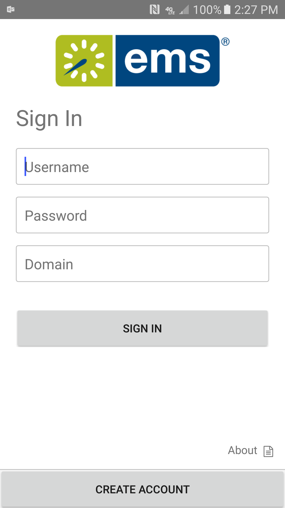
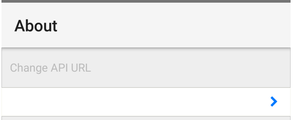
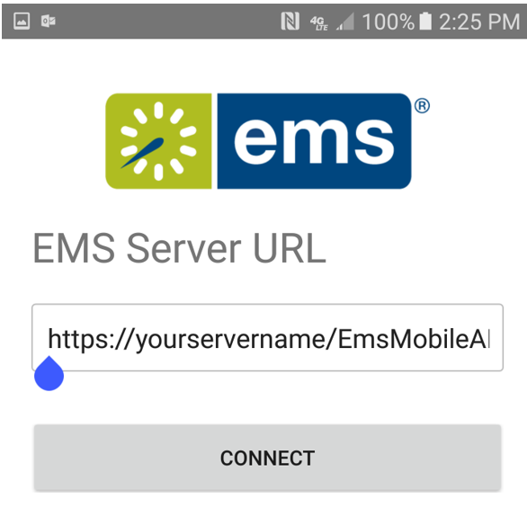

There are two ways to deploy the {{product_mobile}} App for your users:
To deploy via the public app store, direct your users to go to the Google Play and Apple app stores on their mobile devices. They will be able to download the app by clicking on the link. However, they will have to manually input the EMS Mobile API URL. They will receive a prompt to do so the first time they open the {{product_mobile}} App.
If users need to change the API URL at a later date, they can:
1. Open the app, and then click 'About' in the lower right corner.

2. Click to change the API URL.

3. Enter the API URL you provide and connect.

While this approach may be easier for your IT staff, it has definite costs:
To deploy via a private enterprise app store, first download the unsigned apk/ipa files from your EMS software portal. You then have to resign the app and deploy it via your MDM system. This site offers some guidance on how to sign an unsigned ipa file (i.e. for iOS), while this site does the same for Android apk files. Deploying via a private app store allows you to control which version of the Mobile App your users have.
As an example, here are the key steps to resign and deploy the unsigned EMS Mobile App ipa file (following instructions provided here):
Download unsigned builds: .ipa and .apk files
• Optional: Configure API URL and SSO URL via config.json, change logo•
• Change app logo (if using MDM])
Page tags: article:topic